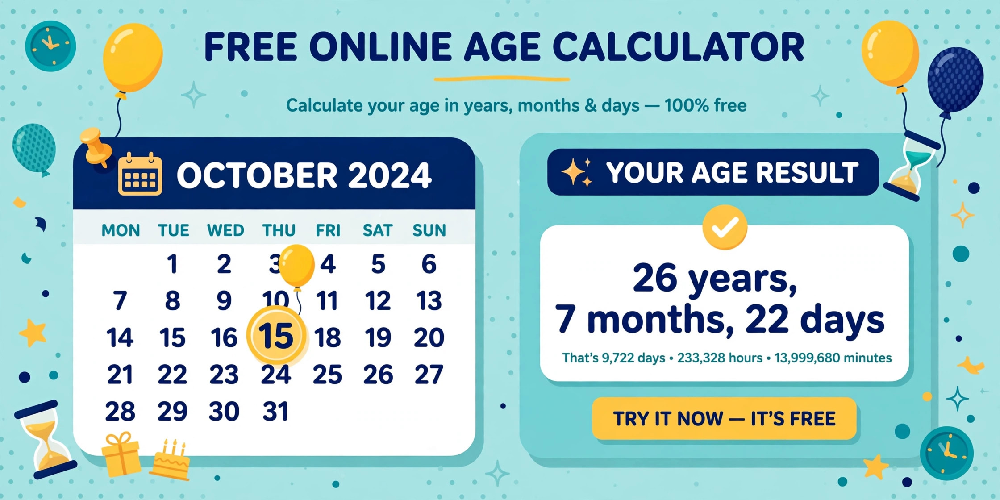

How to Calculate Your Age Online
Your exact age in years, months and days — total days lived, the day you were born, and days until your next birthday, in seconds.
October 24, 2026 · 6 min read

Most people answer "how old are you?" with a single number — and most of the time that is enough. But forms, eligibility rules, visa applications and pension paperwork ask for more: your exact age on a specific date, in years, months and days. That is where mental arithmetic quietly goes wrong, because the calendar does not cooperate — months have different lengths, and every fourth year sneaks in an extra day.
Working out an exact age by hand means subtracting dates across months of 28, 29, 30 and 31 days without slipping once. This guide shows you how to calculate your age online in seconds, explains what each number means, and walks through two worked examples with every step of the maths shown — so you can trust the result, not just read it.
What the Age Calculator does
The Age Calculator takes two dates and returns everything worth knowing about the gap between them:
- Exact age in years, months and days — for example, "26 years, 7 months, 22 days" instead of just "26".
- Total days lived — the whole span as a single number.
- Day of the week you were born — a small joy that also settles arguments.
- Days until your next birthday — a countdown, not a guess.
It also has an "age at date" option: instead of today, you can pick any past or future date and see how old you were — or will be — on that day. Everything runs in your browser, so the dates you enter are never uploaded anywhere.
Calculate your age in 4 steps
- Open the Age Calculator — no signup, no app, it opens straight in the browser.
- Pick your date of birth. Use the calendar picker so there is no confusion about date formats — the order of day and month never gets mixed up when you click a date.
- Optionally set "age at" to a different date. Leave it alone and the calculator uses today. Change it to a past date to look back (how old was I when I graduated?) or a future one to look ahead (will I be 60 at retirement date?).
- Click Calculate age. You get the exact age in years, months and days, the total days lived, the day of the week you were born, and the days until your next birthday.
A worked example: born 1 March 2000
Take a date of birth of 1 March 2000, calculated on 23 October 2026. Here is exactly what the tool computes, step by step:
- Full years first: 1 March 2000 to 1 March 2026 is exactly 26 years.
- Then the remainder: from 1 March 2026 to 23 October 2026 is 7 months and 22 days (March to October is seven month-steps, and 1 October to 23 October is 22 days).
- Exact age: 26 years, 7 months, 22 days.
- Total days lived: 9,732 days — the whole span counted day by day.
- Day born: 1 March 2000 was a Wednesday.
- Next birthday: 1 March 2027 is 129 days away (8 days left in October, plus 30 + 31 + 31 + 28 in November, December, January and February, plus 1 day into March).
Another example: age on a specific date
Born 15 August 1995 — a Tuesday. How old on 1 January 2025? From 15 August 1995 to 15 August 2024 is 29 full years; from 15 August to 15 December 2024 is 4 months; from 15 December to 1 January is 17 days. The answer: 29 years, 4 months, 17 days, or 10,732 days in total.
Exact age vs "just subtract the years"
The lazy method — subtracting birth year from the current year — is wrong for a large part of every year. Someone born on 30 December 2000, calculated on 23 October 2026:
- Year subtraction says: 2026 − 2000 = 26.
- The real answer: from 30 December 2000 to 30 December 2025 is 25 full years, then December to September is 9 months, then 30 September to 23 October is 23 days — 25 years, 9 months, 23 days.
The lazy method overstates the age by more than two months here. If a rule says "must be 26 on or before the deadline", that gap is the difference between eligible and rejected.
5 mistakes that make age calculations wrong
- Subtracting only the years. As the example above shows, you are not 26 until your 26th birthday actually arrives. Any method that ignores the month and day is a guess, not a calculation.
- Forgetting leap years. Years divisible by 4 are leap years (with the century exception: 2000 was a leap year, but 1900 was not). Over a long span, ignoring 29 February shifts the day count by a full day per leap year. Anyone born on 29 February knows this pain personally.
- Assuming every month is 30 days. Mental math often divides by 30, which drifts by days within a few months. Months are 28, 29, 30 or 31 days — a calculator counts the real calendar, not an average one.
- Mixing up date formats. Is 03/04/2000 the 3rd of April or March 4th? Typing dates by hand invites this error; the tool's calendar picker removes it entirely.
- Rounding when the rules don't. "At least 18 years old" means 18 years, 0 months, 0 days — not "in your 18th year". If a cutoff date is involved, calculate the exact age on that exact date.
Frequently asked questions
What is chronological age?
Chronological age is the exact time elapsed since your birth, measured in years, months and days. It is the figure used for legal and administrative purposes — different from "biological age" estimates or the single number you tell people in conversation.
How is exact age calculated in years, months and days?
Count the full years from your date of birth first, then the full months from the last birthday, then the remaining days. For example, from 1 March 2000 to 23 October 2026: 26 full years, then 7 full months (March to October), then 22 days (1 October to 23 October) — 26 years, 7 months, 22 days. The Age Calculator does this instantly.
Why does my age differ between two online calculators?
Usually it is the reference date: some calculators use your local date while you expected another, or one rounds the time while the other shows the exact figure. Check that both use the same date of birth and the same "age at" date, and the numbers will agree.
Can I find my age on a past or future date?
Yes — that is what the "age at" date is for. Set it to a past date to see how old you were (how old was I on my first day of school?), or a future date for planning (how old will I be at retirement?). The day-of-week and countdown figures update to match.
Is my data safe in an online age calculator?
With ours, yes — everything runs locally in your browser. Your dates are never sent to a server, stored, or shared.
Related tools: Age Calculator · Timer / Countdown · World Clock · Percentage Calculator